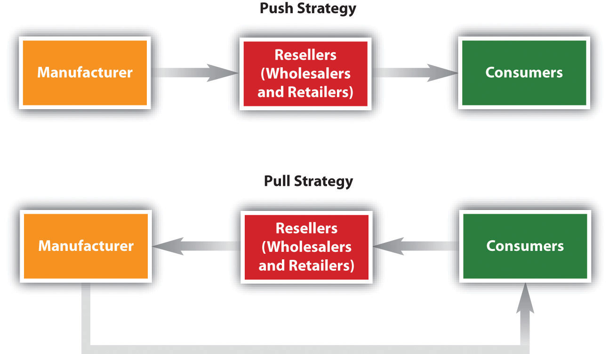

Different organizations in a marketing channel are responsible for different value-adding activities. The following are some of the most common functions channel members perform. However, keep in mind that “who does what” can vary, depending on what the channel members actually agree to in their contracts with one another.
Somehow wholesalers, distributors, retailers, and consumers need to be informed—via marketing communications—that an offering exists and that there’s a good reason to buy it. Sometimes, a push strategy is used to help marketing channels accomplish this. A push strategyA strategy in which businesses are the target of promotions so products get “pushed” through their marketing channels and sold to consumers. is one in which a manufacturer convinces wholesalers, distributors, or retailers to sell its products. Consumers are informed via advertising and other promotions that the product is available for sale, but the main focus is to sell to intermediaries.
Figure 8.12 A Push versus a Pull Strategy
The problem with a push strategy is that it doesn’t focus on the needs of the actual users of the products. Coca-Cola used a push strategy for years before realizing that instead of focusing on moving beverages through a retailer’s back door and into their warehouse, it needed to help them sell to shoppers through the retailer’s front door.“Bottling Success,” Packaging-Gateway.com, September 1, 2006, http://www.packaging-gateway.com/features/feature738/ (accessed December 12, 2009). College textbook publishers are in a similar position today. Traditionally, they have concentrated their selling efforts on professors and bookstore managers. (Has a textbook company ever asked you what you want out of a textbook?) It’s no secret that the price of textbooks is climbing and students are purchasing fewer of them. Like Coca-Cola, textbook publishers are probably going to have to rethink their sales and marketing channel strategies.Goldie Blumenstyk, “Kaplan U.’s Catchy Ad Provokes a Question: Do Colleges Serve Today’s Students?” Chronicle of Higher Education, June 29, 2009, http://chronicle.com/article/Kaplan-Us-Question-Do/46956 (accessed December 12, 2009).
Figure 8.13
Entrepreneurs Jeff Shelstad and Eric Frank launched Unnamed Publisher, the publisher of this textbook. Shelstad and Frank believe they have found a way to add more value to the textbooks you buy. One of their strategies is to deliver their products via a marketing channel that’s different from those used to sell traditional textbooks.
By contrast, a pull strategyA strategy in which consumers are targeted with sales promotions such as coupons, contests, games, rebates, mail-in offers. focuses on creating demand for a product among consumers so that businesses agree to sell the product. A good example of an industry that utilizes both pull and push strategies is the pharmaceutical industry. Pharmaceutical companies promote their drugs to pharmacies and doctors, but they now also run ads designed to persuade individual consumers to ask their physicians about drugs that might benefit them.
In many cases, two or more organizations in a channel jointly promote a product to retailers, purchasing agents, and consumers and work out which organization is responsible for what type of communication to whom. For example, the ads from Target, Walmart, and other retailers you see in the paper on Sunday are often a joint effort between manufacturers and the retailer. Coupons are another joint form of promotion even when offered directly by the manufacturer, joint in the sense that the retailer still has to accept the coupon and process it. The actual forms and styles of communication will be discussed more in the promotions and sales section of the book.
As we explained, many businesses don’t want to receive huge quantities of a product. One of the functions of wholesalers and distributors is to break down large quantities of products into smaller units and provide an assortment of different products to businesses.
For example, cranberry farmers have large crops to sell. You don’t want to buy large amounts of cranberries, make your own juice or cranberry sauce, or dry them into craisins for salads. So the farmers sell their produce to a coop, which sorts the berries by size; large ones become craisins while others are destined to become either juice or sauce, depending on their liquid content. Those are then sold to the juice and sauce producers.
If a channel member has run out of a product when a customer wants to buy it, the result is often a lost sale. That’s why most channel members stock, or “carry,” reserve inventory. However, storing products is not free. Warehouses cost money to build or rent and heat and cool; employees have to be paid to stock shelves, pick products, ship them, and so forth. Some companies, including Walmart, put their suppliers in charge of their inventory. The suppliers have access to Walmart’s inventory levels and ship products when and where the retailer’s stores need them.
Storing and managing inventory is not just a function provided for retailers, though. Storage also involves storing commodities like grain prior to processing. Gigantic grain elevators store corn, wheat, and other grains until processors, like Oroweat, need them. You can buy fresh bread in your grocer every day because the wheat was stored first at a grain elevator until it was needed.
Warehouse Robots at Work
(click to see video)Not all warehouses utilize humans to pluck products from shelves. Some of them use robots, as this video shows. Robots cost money, too, though.
Physical goods that travel within a channel need to be moved from one member to another and sometimes back again. Some large wholesalers, distributors, and retailers own their own fleets of trucks for this purpose. In other cases, they hire third-party transportation providers—trucking companies, railroads, and so forth—to move their products.
Being able to track merchandise like you can track a FedEx package is extremely important to channel partners. They want to know where their products are at all times and what shape they are in. Losing inventory or having it damaged or spoiled can wreak havoc on a company’s profits. So can not getting products on time or being able to get them at all when your competitors can.
If products are damaged during transit, one of the first questions asked is who owned the product at the time. In other words, who suffers the loss? Generally, no one channel member assumes all of the ownership risk in a channel. Instead, it is distributed among channel members depending on the contracts they have with one another and their free on board provisions. A free on board (FOB)A contract term that designates which party is responsible for a product’s shipping costs and owns the title to the goods and when. provision designates who is responsible for what shipping costs and who owns the title to the goods and when. However, the type of product, the demand for it, marketing conditions, and the clout of the various organizations in its marketing channel can affect the contract terms channel members are willing to agree to. Some companies try to wait as long as possible to take ownership of products so they don’t have to store them. During the economic downturn, many channel members tried to hold as little inventory as possible for fear it would go unsold or become obsolete.Barbara Jorgensen, “Distributors’ Services Help Keep Customers Afloat,” EDN 54, no. 8 (April 23, 2009): 60.
Each of the channel members has information about the demand for products, trends, inventory levels, and what the competition is doing. The information is valuable and can be doubly valuable if channel partners trust one another and share it. More information can help each firm in the marketing channel perform its functions better and overcome competitive obstacles.Gary L. Frazier, Elliot Maltz, Kersi D. Antia, and Aric Rindfleisch, “Distributor Sharing of Strategic Information with Suppliers,” Journal of Marketing, July 1, 2009, http://www.atypon-link.com/AMA/doi/abs/10.1509/jmkg.73.4.31?cookieSet=1&journalCode=jmkg (accessed December 12, 2009).
That said, confidentiality is a huge issue among supply chain partners because they share so much information with one another, such as sales and inventory data. For example, a salesperson who sells Tide laundry detergent for Procter & Gamble will have a good idea of how many units of Tide Walmart and Target are selling. However, it would be unethical for the salesperson to share Walmart’s numbers with Target or Target’s numbers with Walmart. Many business buyers require their channel partners to sign nondisclosure agreements or make the agreements part of purchasing contracts. A nondisclosure agreement (NDA)A contract that specifies information that is proprietary, or owned by a channel partner, and how, if at all, the other partners can use that information. is a contract that specifies what information is proprietary, or owned by the partner, and how, if at all, the partner can use that information.
Different organizations in a marketing channel are responsible for different value-adding activities. These activities include disseminating marketing communications and promoting brands, sorting and regrouping products, storing and managing inventory, distributing products, assuming the risk of products, and sharing information.